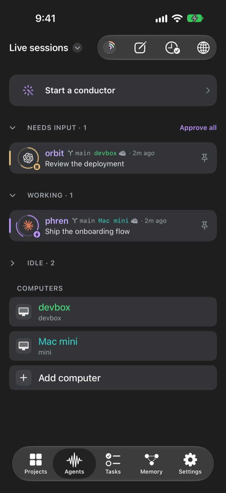
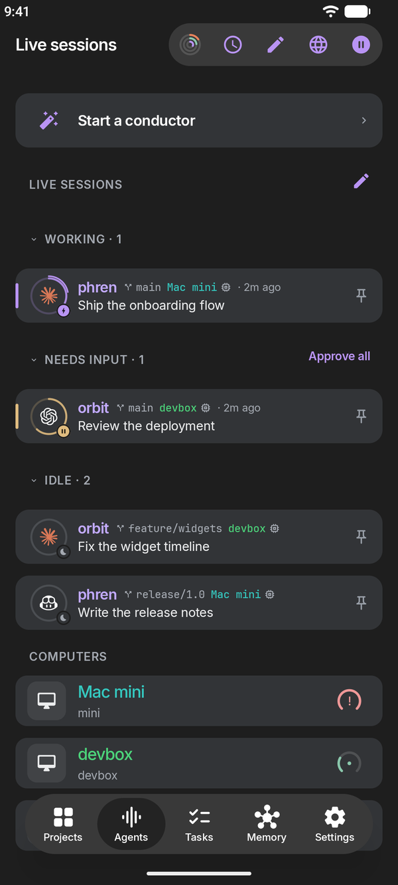
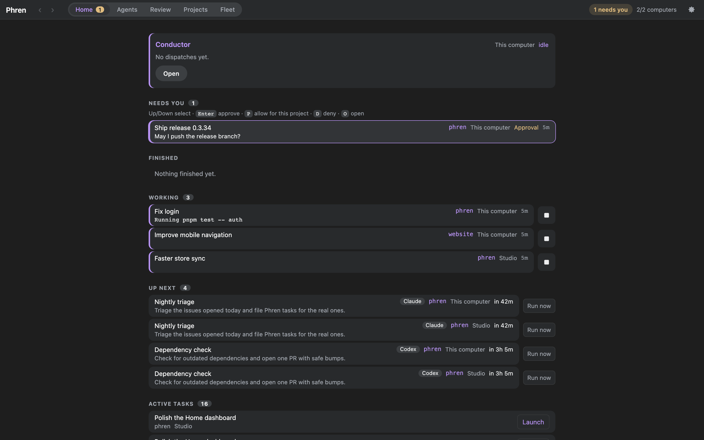

Phren apps
Your agents,
on every screen.
Phren talks to the coding agents on your own computers and shows what they know. Use it on your phone, on your desk, or both. Every app reaches your computers through Phren Hook over SSH. There is no phren server in between.

iPhone
Talk to your agents, approve from the Lock Screen, send work to any computer.
TestFlight · 1.0.26 · iOS 17+
Android
The same memory, chat and terminals, with a share target and a Quick Settings tile.
Early testing · 1.0.18 · Android 8+
Desktop
A cockpit for every computer: tiled chats, a command palette, changes and memory.
macOS, Windows, Linux · 0.1.14What they share
- The same sessions. Claude Code, Codex, Copilot and OpenCode, on every computer you pair, sorted by what needs you.
- Native chat. Replies as they stream, commands and diffs, approvals and questions you answer in place, and talk mode on the phones.
- The same memory. Findings, notes, tasks and the review queue from your phren store.
- Nothing in between. GitHub for the store, pinned SSH to your computers, Tailscale when you are away.
New here? Get started pairs a computer and opens your first chat. The apps connect through Phren Hook.